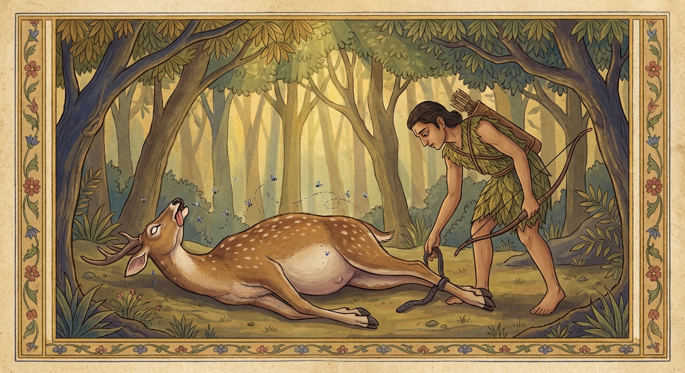

6. තිපල්ලත්ථමිග ජාතකය (16)
“මිගං තිපල්ලත්ථං” යන මෙය බුදුරජාණන් වහන්සේ කොසඹෑ නුවර බදරිකාරාමයෙහි වැඩවසමින් ශික්ෂාකාමී වූ රාහුල තෙරුන් අරබයා දේශනා කළහ. එක් කාලයක බුදුරදුන් අළව් නුවර අග්ගාළව චෛත්යයෙහි වසන කල්හි උපාසක උපාසිකාවෝත් භික්ෂූ භික්ෂුණියෝත් බණ ඇසීම සඳහා විහාරයට යති. බණ දෙසීම දවල් කාලයෙහි විය. කල් යත් ම උපාසිකාවෝත් භික්ෂුණියෝත් බණ ඇසීමට නොගියහ. උපාසකයෝ ද භික්ෂූහු ද පමණක් වූහ. එතැන් පටන් බණ ඇසීම රාත්රී කාලයෙහි සිදුවිය. බණ ඇසීම අවසානයේ ස්ථවිර භික්ෂූහු තම තමන්ගේ වසන තැන්වලට යති. ලාබාල භික්ෂූහු සහ සාමණේරයෝ උපාසකයන් සමඟ උපස්ථාන ශාලාවෙහි නිදති. ඔවුහු නිදිගත් කල්හි සමහරු ගොරවමින් හුස්ම ගනිති. සමහරු නින්දෙන් දොඩවමින් ද සමහරු දත් විකමින් ද නිදාගත්හ. සමහරු ටික වේලාවක් නිදා නැගිටිති. ඔවුහු මෙම නොමනා හැසිරීම බුදුරදුන්ට දැන්වූහ. බුදුරජාණන් වහන්සේ “යම් භික්ෂුවක් උපසපන් නොවූවකු සමඟ (එක වහලක් යට) එකට නිදන්නේ නම්, පාචිත්තිය ඇවතක් වේ” යැයි ශික්ෂා පදය පනවා කොසඹෑ නුවරට වැඩම කළහ.
එහිදී භික්ෂූහු ආයුෂ්මත් රාහුල තෙරුන්ට කතා කොට, “ඇවැත් රාහුලයනි, බුදුරදුන් විසින් ශික්ෂාපදයක් පනවන ලදී. දැන් ඔබ තමන්ගේ වසන ස්ථානයක් සොයා දැනගන්න” යැයි කීහ. පෙරදී භික්ෂූහු බුදුරදුන් කෙරෙහි ගෞරවය නිසාත්, රාහුල ආයුෂ්මතුන්ගේ ශික්ෂාකාමීත්වය නිසාත්, තම වාසස්ථානයට එන ඔහුට දැඩි සේ සැලකිලි දක්වති. කුඩා ඇඳක් සකසා හිස තැබීම සඳහා සිවුරු දෙති. එහෙත් එදින ශික්ෂාපදයට බියෙන් විසීමට ඉඩක්වත් නොදුන්හ. රාහුල තෙරණුවෝ, “මගේ පියාණන්” යැයි සිතා බුදුරදුන් වෙත හෝ, “මාගේ උපාධ්යායයන් වහන්සේ” යැයි සිතා ධර්මසේනාපති සැරියුත් තෙරුන් වෙත හෝ, “මාගේ ආචාර්යයන් වහන්සේ” යැයි සිතා මහ මුගලන් තෙරුන් වෙත හෝ, “මාගේ සුළු පියාණන්” යැයි සිතා ආනන්ද තෙරුන් වෙත හෝ නොගොස්, බ්රහ්ම විමානයකට පිවිසෙන්නාක් මෙන් බුදුරදුන්ගේ වැසිකිළියට පිවිස වාසය කළහ. බුදුරදුන්ගේ වැසිකිළියෙහි දොර මනාව වසා තිබේ. බිම සුවඳ පිරියම් කර ඇත. ගඳ මල් දම් එල්ලා තිබේ. මුළු රාත්රිය පුරා පහනක් දැල්වේ. රාහුල තෙරණුවෝ ඒ කුටියෙහි ඇති පහසුකම් සලකා එහි වාසයට පැමිණියේ නොවෙති. භික්ෂූන් විසින් “වසනා තැනක් බලාගන්න” යැයි කියන ලද බැවින්, අවවාදයට ගරු කිරීමක් වශයෙන් හා ශික්ෂාකාමී බව නිසා උන්වහන්සේ එහි වාසයට පැමිණියහ. වරින්වර භික්ෂූහු රාහුල තෙරුන් දුර එනු දැක විමසනු පිණිස ඉලපතක් හෝ කසළ බඳුනක් හෝ පිටතට දමා, ඔහු පැමිණි කල්හි “ඇවැත්නි, මෙය ඉවත දමන ලද්දේ කවුරුන් විසින් දැයි” අසති. එහි සිටි කෙනෙකු “මේ මගින් රාහුල ගියේය” යැයි කී කල්හි, ආයුෂ්මත් රාහුල තෙරණුවෝ “හිමියනි, මම නොදනිමි” යි නොකියා, එය අස්කර තබා “හිමියනි, මට සමාවන්න” යැයි භික්ෂූන්ගෙන් සමාව ගෙන යති. උන්වහන්සේ එසේ ශික්ෂාකාමී ය. උන්වහන්සේ එහි වාසයට ගියේ ද ඒ ශික්ෂාකාමීත්වය නිසා ම ය.
ඉක්බිති බුදුරජාණන් වහන්සේ අරුණ නැගීමට පෙර ම වැසිකිළි දොර ළඟ සිට උගුර පෑදූහ. ඒ ආයුෂ්මතුන් වහන්සේ ද (ඇතුළත සිට) උගුර පෑදූහ. “මේ කවුද?” යි ඇසූ විට, “මම රාහුල වෙමි” යි කියා පිටතට පැමිණ වැන්දේය. “රාහුල, ඔබ ඇයි මෙහි වැදහොත්තේ?” “විසීමට තැනක් නැති හෙයිනි. ස්වාමීනි, පෙර භික්ෂූහු මට සංග්රහ කරති. දැන් ඇවැත් බිය නිසා වසන තැනක් නොදෙති. ඒ නිසා, ‘මෙය අනුන් හා නොගැටෙන තැනක් ය’ යන අදහසින් මම මෙහි නිදාගත්තෙමි.” බුදුරදුන්ට (මේ ගැන) ධර්ම සංවේගය පහළ විය. “භික්ෂූහු රාහුලව මෙසේ ප්රතික්ෂේප කරන්නාහු නම්, අන් කුලදරුවන් පැවිදි කොට කුමක් කරන්නාහු ද?” යැයි සිතූ බුදුරජාණන් වහන්සේ, උදෑසන ම භික්ෂූන් රැස්කරවා, “සාරිපුත්ත, ඊයේ රාත්රියේ රාහුල කිසියම් තැනක විසූ බව දන්නෙහිදැ?” යි ධර්මසේනාපතීන් වහන්සේගෙන් ඇසූහ. “නොදනිමි, ස්වාමීනි.” “සාරිපුත්ත, රාහුල අද වැසිකිළියෙහි විසීය. සාරිපුත්ත, තොප රාහුලව මෙසේ බැහැර කරන විට අන් කුල දරුවන් පැවිදි කොට කුමක් කරනු ඇද්ද? මෙසේ වූ කල මේ සසුනෙහි පැවිදිවූවෝ පිහිටක් නැත්තෝ වන්නාහුය. මෙතැන් පටන් උපසපන් නොවූවන් (සාමණේරයන්) සමඟ එක් රැයක් හෝ දෙකක් තමා සමඟ වාසය කරවා, තෙවන දවසෙහි ඔවුන්ට වාසස්ථානයක් දැන කියා දී පිටත වාසය කරවිය යුතුය” යැයි අනුප්රඥප්තියක් පනවා නැවත ශික්ෂාපදය පැනවූහ.
එකල්හි දම්සභාවෙහි රැස්වූ භික්ෂූහු රාහුල හිමියන්ගේ ගුණ කතා කරමින්, “ඇවැත්නි, බලන්න. රාහුල තෙරණුවෝ කොතරම් ශික්ෂාකාමී ද? ‘ඔබ වසන තැනක් බලාගන්න’ යැයි කී විට, ‘මම දසබලයන් වහන්සේගේ පුත්රයා වෙමි. ඔබලාගේ සෙනසුනෙන් නික්ම යා යුත්තේ කවුරුන්ද? ඔබලා ම නික්මෙනු’ ආදී වශයෙන් එක භික්ෂුවකටවත් විරුද්ධව වචනයක්වත් නොකියා වැසිකිළියෙහි වාසය කළේය” යැයි මෙසේ ඔවුන් කතා කරමින් සිටියදී, බුදුරජාණන් වහන්සේ දම්සභාවට වැඩම කොට පනවන ලද අසුනෙහි වැඩ සිට, “මහණෙනි, කවර නම් කතාවකින් දැන් හුන්නාහු ද?” යි ඇසූහ. “ස්වාමීනි, රාහුල තෙරුන්ගේ ශික්ෂාකාමී බව පිළිබඳ කතාවෙනි. අන් කතාවකින් නොවේ.” “මහණෙනි, රාහුල ශික්ෂාකාමී වූයේ දැන් පමණක් නොවේ. පෙර තිරිසන් යෝනියෙහි උපන් කල්හි ද ශික්ෂාකාමී වූයේ ම යැ” යි වදාරා අතීත කතාව ගෙනහැර දැක්වූහ.
අතීතයේ රජගහ නුවර මගධ රජු රාජ්යය කරන සමයේ, බෝසතාණන් වහන්සේ මුව යෝනියෙහි ඉපිද මුව සමූහයා පිරිවරාගෙන මහ වනයෙහි වාසය කළහ. එකල්හි බෝසතුන්ගේ නැගණිය තම පුතා කැඳවාගෙන අවුත්, “සොහොයුර, මේ ඔබගේ බෑණා ය. මොහුට මුව මායම් පුහුණු කළ මැනව” යැයි කීවාය. බෝසත්හු “යහපති” යැයි පිළිගෙන, “දරුව, යන්න. අසවල් වේලාවට අවුත් පුහුණු වන්නැ” යි කීහ. ඔහු ද මයිලණුවන් කී වේලාව නොඉක්මවා ඔහු වෙත එළඹ මුව මායම් උගත්තේය. දිනක් ඔහු වනයෙහි හැසිරෙන විට මළ පුඩුවක (උගුලක) බැඳී, අසු වූ බව හැඟවෙන හඬින් කෑ ගැසීය. මුව රැල පලා ගොස්, ඇගේ පුතා උගුලෙහි බැඳුණු බව මවට කීහ. ඕ බෑයා ළඟට ගොස්, “සොහොයුරාණෙනි, ඔබගේ බෑණාට මුව මායම් උගන්වන ලද්දේ දැ?” යි විචාළාය. “ඔබ පුත්රයා ගැන සැකයක් නොසිතන්න. ඔහු විසින් මුව මායම් මනාව ඉගෙන ගන්නා ලදී. දැන් ඔහු (වැද්දා) සිනා ගන්වමින් (රවටා) එන්නේය” යැයි පවසා මේ ගාථාව කීහ.
“කුර අටක් ඇති, මැදියම් රැයෙහි පැමිණ ජලය බොන, තිපල්ලත්ථ මුවාට නොයෙක් මායම් ඉගැන්වීමි. ඒ බෑණා කලාවන් සය අතුරින් එකකින් (එනම් නාස් පුඩුවකින් හුස්ම ගැනීමෙන්) වැද්දා රවටා බිම සැනසෙන්නේය.”
එහි ‘මිගං’ යනු බෑණ මුවා ය. ‘තිපල්ලත්ථ’ යන්නෙහි ‘පල්ලත්ථ’ යනු නිදීමයි. දෙපසට නිදීම, හිටගෙන නිදීම සහ (පසුපසට හැරී ගවයෙකු සේ) නිදීම වශයෙන් තුන් ආකාර නිදීම් ඇත්තේ යමෙකුට ද, (එම) නිදීම් තුනම ඇත්තේ ඔහු ‘තිපල්ලත්ථ’ නම් වේ. ‘අනෙක මායං’ යනු බොහෝ මායා ඇති සහ කපටිකම් ඇති බවයි. ‘අට්ඨක්ඛුරං’ යනු එක් එක් පාදයක දෙක බැගින් කුර අටක් ඇති බවයි. ‘අඩ්ඪරත්තාපපායිං’ යනු පෙරයම ඉක්මවා මැදියම් රෑ වනයෙන් අවුත් පැන් බොන නිසා ‘අඩ්ඪරත්තාපපායී’ නම් වේ. මම මගේ බෑණ මුවාට මැනවින් මුව මායම් ඉගැන්වීමි. කෙසේද යත්? ‘එකෙන සොතෙන ඡමාස්සසන්තො ඡහි කලාහිතිභොති භාගිනෙය්යො’ යනුවෙන් කියන ලද්දේ මෙම අදහසයි. “මම තාගේ පුතාට මෙසේ ඉගැන්වීමි: උඩුපැත්තට ඇති නාස් සිදුරෙන් වාතය තදකොටගෙන, පොළොවට ඇලුණු යට නාස් පුඩුවෙන් හුස්ම ගනිමින්, කරුණු සයකින් යුත් මායාවෙන් වැද්දා රවටයි.” කවර සයකින් ද යත්:
- පා සතර දිගහැර එක පැත්තකට වී වැතිර සිටීම.
- කුරවලින් තණ හා පස් හාරා දැමීම.
- දිව එළියට දමාගෙන සිටීම (ජිව්හානින්නාමනය).
- බඩ පුම්බාගෙන සිටීම.
- මළ මුත්ර පිටකර තිබීම.
- හුස්ම හිරකරගෙන සිටීම (වාත සන්නිරුම්භනය).
තවත් ක්රමයකට එම කලා (මායා) සය මෙසේ ය:
- අත්පා ඉදිරියට ඇදීම.
- අත්පා ආපසු ඇදීම.
- දෙපසට සෙලවීම (පෙරළීම).
- බඩ ඉහළට එසවීම.
- බඩ පහතට හෙළීම.
(සහ මළ මුත්ර පිටකිරීම ආදියයි).
මේ කලාවන් සය මගින් “මූ මළේය” යි හැඟීමක් ඇතිකොට (වැද්දා) රවටයි. මෙසේ ඔහුට මුව මායම් ඉගැන්වූ බව දක්වයි.
මෙසේ ඔහුට මුව මායම් ඉගැන්වූ බව දක්වයි. ‘එකෙන සොතෙන ඡමාස්සසන්තො ඡහි කලාහිති’ යනු පෙර කී දෙයාකාර වූ ක්රමවලින් වැද්දා රවටයි යන අර්ථයයි. ‘භොති’ යනු නැගණිය අමතන වචනයයි. ‘භාගිනෙය්යො’ යි, මෙකී සය කරුණකින් රවටන බෑණා නිර්දේශ කරයි. මෙසේ බෝසත්හු බෑණා විසින් මුව මායම් මැනවින් උගෙන ඇති බව දක්වමින් නැගණිය අස්වැසූහ.
මළ පුඩුවෙහි (උගුලෙහි) බැඳුණු ඒ මුවපොව්වා ද කලබල නොවී, මහ ඉල ඇට ඇති පැත්තෙන් බිම වැතිර පාදයන් දිග හැර හොත්තේය. පාදයන්ට ළඟ භූමිය කුරවලින් ගසා තණ ද පස් ද විසුරුවා, මළ මුත්ර පහකර, හිස පහත් කොට, දිව එළියට දමාගෙන, ඇඟ හැමතැන කෙළ තවරා, හුස්ම (වාතය) ගැනීමෙන් උදරය ඉදිමී ගිය සේ කොට, ඇස් පෙරළා, යට නාස් පුඩුවෙන් හුස්ම ගනිමින් උඩු නාස් පුඩුවෙහි හුස්ම තදකොට, මුළු සිරුරම දරදඬු කොට ගෙන මළ ආකාරයක් දැක්වීය. නිල මැස්සෝ ද ඔහු පිරිවැරූහ. කපුටෝ ද ඒ තැන (මස් කෑමට) සැඟවී සිටියහ. වැද්දා අවුත් උදරයට අතින් ගසා, “ඉතා අලුයම බැඳුණා විය යුතුයි. කුණු වී ඇතැ” යි සිතා, බැඳි රැහැන මුදා “මෙහිදී ම මුවා කපා මස් ගෙන යමි” යි සැක හැර, අතු කොළ එකතු කිරීමට පටන් ගත්තේය. මුවපොව්වා ද (වැද්දා ඈත් වනු බලා) නැගිට, පා සතරෙන් සිටගෙන, ඇඟ ගසා දමා, ගෙල ඔසවා, මහා සුළඟින් කැඩී ගිය වලාකුළු පටලයක් මෙන් වේගයෙන් මව වෙත ගියේය.

“මහණෙනි, රාහුල ශික්ෂාකාමී වූයේ දැන් පමණක් නොවේ. පෙරත් එසේ ම වූයේ ය” යි බුදුරජාණන් වහන්සේ මේ ධර්ම දේශනය ගෙනහැර දක්වා, පූර්වාපර සන්ධි ගලපා ජාතකය නිම කළහ. “එකල බෑණා මුවපොව්වා නම් දැන් රාහුල ය. මව උප්පලවණ්ණා ය. මාමා වූ මුවා නම් මම ම වූයෙමි.”
තිපල්ලත්ථමිග ජාතක වර්ණනාව නිමාවිය.